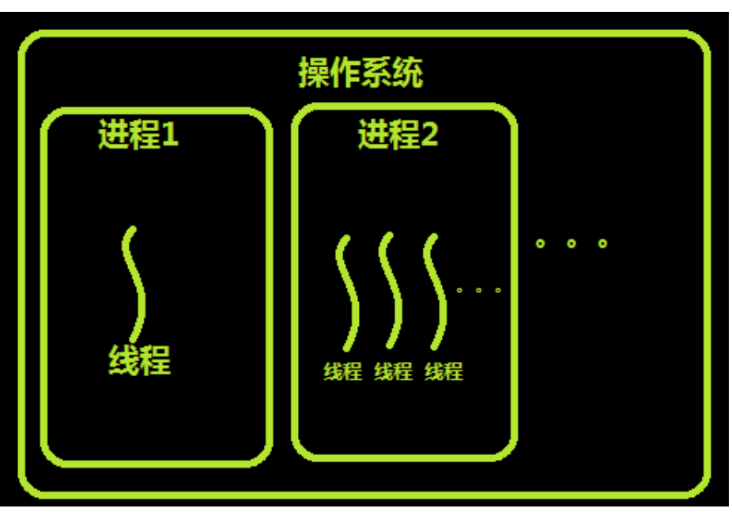
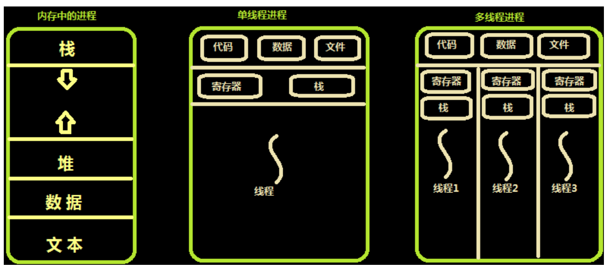
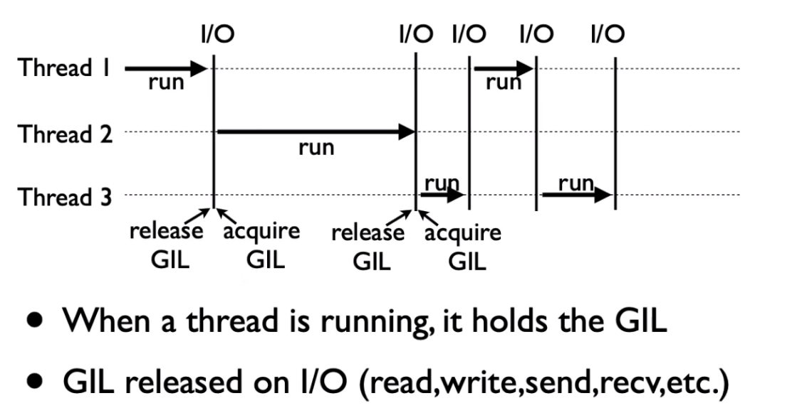

操作系统线程理论 进程 进程只能在一个时间干一件事，如果想同时干两件事或多件事，进程就无能为力了。
进程在执行的过程中如果阻塞，例如等待输入，整个进程就会挂起，即使进程中有些工作不依赖于输入的数据，也将无法执行。
线程 60年代，在OS中能拥有资源和独立运行的基本单位是进程，然而随着计算机技术的发展，进程出现了很多弊端
是由于进程是资源拥有者，创建、撤消与切换存在较大的时空开销，因此需要引入轻型进程；
是由于对称多处理机（SMP）出现，可以满足多个运行单位，而多个进程并行开销过大。
因此在80年代，出现了能独立运行的基本单位——线程（Threads）。
注意：进程是资源分配的最小单位,线程是CPU调度的最小单位.每一个进程中至少有一个线程。
进程和线程的关系 
线程与进程的区别可以归纳为以下4点：
地址空间和其它资源共享（如打开文件）：进程间相互独立，同一进程的各线程间共享。某进程内 的线程在其它进程不可见。
通信：进程间通信IPC，线程间可以直接读写进程数据段（如全局变量）来进行通信——需要进程 同步和互斥手段的辅助，以保证数据的一致性。
调度和切换：线程上下文切换比进程上下文切换要快得多。
使用线程的实际场景 开启一个字处理软件进程，该进程肯定需要办不止一件事情，比如监听键盘输入，处理文字，定时自动 将文字保存到硬盘，这三个任务操作的都是同一块数据，因而不能用多进程。只能在一个进程里并发地 开启三个线程,如果是单线程，那就只能是，键盘输入时，不能处理文字和自动保存，自动保存时又不能 输入和处理文字。
内存中的线程 
线程通常是有益的，但是带来了不小程序设计难度，线程的问题是：
父进程有多个线程，那么开启的子线程是否需要同样多的线程
在同一个进程中，如果一个线程关闭了文件，而另外一个线程正准备往该文件内写内容呢？
因此，在多线程的代码中，需要更多的心思来设计程序的逻辑、保护程序的数据。
python使用线程 全局解释器锁GIL Python代码的执行由Python虚拟机(也叫解释器主循环)来控制。Python在设计之初就考虑到要在主循环 中，同时只有一个线程在执行。虽然 Python 解释器中可以“运行”多个线程，但在任意时刻只有一个线程 在解释器中运行。
对Python虚拟机的访问由全局解释器锁(GIL)来控制，正是这个锁能保证同一时刻只有一个线程在运 行。
在多线程环境中，Python 虚拟机按以下方式执行：

设置 GIL；
切换到一个线程去运行；
运行指定数量的字节码指令或者线程主动让出控制(可以调用 time.sleep(0))；
把线程设置为睡眠状态；
解锁 GIL；
再次重复以上所有步骤。
在调用外部代码(如 C/C++扩展函数)的时候，GIL将会被锁定，直到这个函数结束为止(由于在这期 间没有Python的字节码被运行，所以不会做线程切换)编写扩展的程序员可以主动解锁GIL。
https://blog.csdn.net/weixin_42239402/article/details/95375147
python线程模块的选择 Python提供了几个用于多线程编程的模块，包括thread、threading和Queue等。thread和threading 模块允许程序员创建和管理线程。thread模块提供了基本的线程和锁的支持，threading提供了更高级别、功能更强的线程管理的功能。Queue模块允许用户创建一个可以用于多个线程之间共享数据的队列 数据结构。
避免使用thread模块，因为更高级别的threading模块更为先进，对线程的支持更为完善，而且使用 thread模块里的属性有可能会与threading出现冲突；其次低级别的thread模块的同步原语很少(实际上 只有一个)，而threading模块则有很多；再者，thread模块中当主线程结束时，所有的线程都会被强制 结束掉，没有警告也不会有正常的清除工作，至少threading模块能确保重要的子线程退出后进程才退 出。
thread模块不支持守护线程，当主线程退出时，所有的子线程不论它们是否还在工作，都会被强行退 出。而threading模块支持守护线程，守护线程一般是一个等待客户请求的服务器，如果没有客户提出请 求它就在那等着，如果设定一个线程为守护线程，就表示这个线程是不重要的，在进程退出的时候，不 用等待这个线程退出。
threading模块 线程的创建 1 2 3 4 5 6 7 8 9 10 from threading import Threadimport timedef sayhi (name ):2 )print ('%s say hello' %name)if __name__ == '__main__' :'aaron' ,))print ('主线程' )
另一种以类继承创建进程的方式
1 2 3 4 5 6 7 8 9 10 11 12 13 14 from threading import Threadimport timeclass Sayhi (Thread ):def __init__ (self,name ):super ().__init__()def run (self ):2 )print ('%s say hello' % self.name)if __name__ == '__main__' :'aaron' )print ('主线程' )
多线程与多进程 1 2 3 4 5 6 7 8 9 10 11 12 13 14 15 16 17 18 19 20 21 from threading import Threadfrom multiprocessing import Processimport osdef work ():print ('hello' ,os.getpid())if __name__ == '__main__' :print ('主线程/主进程pid' ,os.getpid())print ('主线程/主进程pid' ,os.getpid())
效率对比
1 2 3 4 5 6 7 8 9 10 11 12 13 14 15 16 17 18 19 from threading import Threadfrom multiprocessing import Processimport timedef say_hi (n ):for i in range (10 ):print (n+1 )if __name__ == '__main__' :for i in range (100 ):for i in t_list:print (t2-t1)print ("主线程" )
内存数据共享
1 2 3 4 5 6 7 8 9 10 11 12 13 14 15 16 17 18 19 20 from threading import Threadfrom multiprocessing import Processfrom threading import Threadimport osdef work ():global n0 if __name__ == '__main__' :1 print ('主' ,n)
多线程实现socket 服务端
1 2 3 4 5 6 7 8 9 10 11 12 13 14 15 16 17 18 19 20 import multiprocessingimport threadingimport socket'127.0.0.1' ,8080 ))5 )def action (conn ):while True :1024 )print (data)if __name__ == '__main__' :while True :
客户端
1 2 3 4 5 6 7 8 9 10 11 12 import socket'127.0.0.1' ,8080 ))while True :input ('>>: ' ).strip()if not msg:continue 'utf-8' ))1024 )print (data)
Thread类的其他方法 Thread实例对象的方法
isAlive(): 返回线程是否活动的。 getName(): 返回线程名。 setName(): 设置线程名。 threading模块提供的一些方法：
threading.currentThread(): 返回当前的线程变量。 threading.enumerate(): 返回一个包含正在运行的线程的list。正在运行指线程启动后、结束前，不包括启动前和终止后的线程。 threading.activeCount(): 返回正在运行的线程数量，与len(threading.enumerate())有相同的结果。 1 2 3 4 5 6 7 8 9 10 11 12 13 14 15 16 17 18 19 20 from threading import Threadimport threadingfrom multiprocessing import Processimport osdef work ():import time3 )print (threading.current_thread().getName())if __name__ == '__main__' :print (threading.current_thread().getName())print (threading.current_thread()) print (threading.enumerate ()) print (threading.active_count())print ('主线程/主进程' )
使用join
1 2 3 4 5 6 7 8 9 10 11 12 from threading import Threadimport timedef sayhi (name ):2 )print ('%s say hello' %name)if __name__ == '__main__' :'aaron' ,))print ('主线程' )print (t.is_alive())
守护线程 无论是进程还是线程，都遵循：守护xx会等待主xx运行完毕后被销毁。需要强调的是：运行完毕并非终止运行
对主进程来说，运行完毕指的是主进程代码运行完毕
主进程在其代码结束后就已经算运行完毕了（守护进程在此时就被回收）,然后主进程会一直等非守 护的子进程都运行完毕后回收子进程的资源(否则会产生僵尸进程)，才会结束，
对主线程来说，运行完毕指的是主线程所在的进程内所有非守护线程统统运行完毕，主线程才算运 行完毕
主线程在其他非守护线程运行完毕后才算运行完毕（守护线程在此时就被回收）。因为主线程的结 束意味着进程的结束，进程整体的资源都将被回收，而进程必须保证非守护线程都运行完毕后才能结束。
1 2 3 4 5 6 7 8 9 10 11 12 13 from threading import Threadimport timedef sayhi (name ):2 )print ('%s say hello' %name)if __name__ == '__main__' :'aaron' ,))True ) print ('主线程' )print (t.is_alive())
1 2 3 4 5 6 7 8 9 10 11 12 13 14 15 16 17 18 19 20 21 22 23 24 25 26 27 from threading import Threadimport timedef foo ():print (123 )1 )print ("end123" )def bar ():print (456 )3 )print ("end456" )if __name__ == '__main__' :True print ("main" )
锁 同步锁 没有锁的情况下
1 2 3 4 5 6 7 8 9 10 11 12 13 14 15 16 17 18 19 20 from threading import Threadimport os,timedef work ():global n0.1 )1 if __name__ == '__main__' :100 for i in range (100 ):for p in l:print (n)
同步锁
1 2 3 4 5 6 7 import threading''' 对公共数据的操作 '''
1 2 3 4 5 6 7 8 9 10 11 12 13 14 15 16 17 18 19 20 21 from threading import Thread,Lockimport os,timedef work ():global n0.1 )1 if __name__ == '__main__' :100 for i in range (100 ):for p in l:print (n)
1 2 3 4 5 6 7 8 9 10 11 12 13 14 15 16 17 18 19 20 21 22 23 24 25 from threading import current_thread,Thread,Lockimport os,timedef task ():global nprint ('%s is running' %current_thread().getName())0.5 )1 if __name__ == '__main__' :100 for i in range (100 ):for t in threads:print ('主:%s n:%s' %(stop_time-start_time,n))
1 2 3 4 5 6 7 8 9 10 11 12 13 14 15 16 17 18 19 20 21 22 23 24 25 26 27 28 from threading import current_thread,Thread,Lockimport os,timedef task ():3 )print ('%s start to run' %current_thread().getName())global n0.5 )1 if __name__ == '__main__' :100 for i in range (100 ):for t in threads:print ('主:%s n:%s' %(stop_time-start_time,n))
有的同学可能有疑问:既然加锁会让运行变成串行,那么我在start之后立即使用join,就不用加锁了啊,也是串行的效果啊
没错:在start之后立刻使用join,肯定会将100个任务的执行变成串行,毫无疑问,最终n的结果也肯定是0,是 安全的,但问题是
start后立即join:任务内的所有代码都是串行执行的,而加锁,只是加锁的部分即修改共享数据的部分是串 行的
单从保证数据安全方面,二者都可以实现,但很明显是加锁的效率更高.
立刻join版
1 2 3 4 5 6 7 8 9 10 11 12 13 14 15 16 17 18 19 20 from threading import current_thread,Thread,Lockimport os,timedef task ():3 )print ('%s start to run' %current_thread().getName())global n0.5 )1 if __name__ == '__main__' :100 for i in range (100 ):print ('主:%s n:%s' %(stop_time-start_time,n))
死锁与递归锁 两个或两个以上的进程或线程在执行过程中，因争夺资源而造成的一种互相等待的现象，若无外力作用，它们都将无法推进下去。此时称系统处于死锁状态或系统产生了死锁，这些永远在互相等待的进程称为死锁进程
1 2 3 4 5 6 7 8 9 from threading import Lock as Lockimport timeprint (123 )
解决方法，递归锁，在Python中为了支持在同一线程中多次请求同一资源，python提供了可重入锁 RLock。
这个RLock内部维护着一个Lock和一个counter变量，counter记录了acquire的次数，从而使得资源可以被多次acquire。直到一个线程所有的acquire都被release，其他的线程才能获得资源。上面的例子如果使用RLock代替Lock，则不会发生死锁
1 2 3 4 5 6 7 8 from threading import RLock as Lockimport timeprint (123 )
吃面的问题
1 2 3 4 5 6 7 8 9 10 11 12 13 14 15 16 17 18 19 20 21 22 23 24 25 26 27 28 29 import timefrom threading import Thread,Lockdef eat1 (name ):print ('%s 抢到了面条' %name)print ('%s 抢到了叉子' %name)print ('%s 吃面' %name)def eat2 (name ):print ('%s 抢到了叉子' % name)1 )print ('%s 抢到了面条' % name)print ('%s 吃面' % name)for name in ['顾客1' ,'顾客2' ,'顾客3' ]:
使用递归锁解决问题
1 2 3 4 5 6 7 8 9 10 11 12 13 14 15 16 17 18 19 20 21 22 23 24 25 26 27 28 import timefrom threading import Thread,RLockdef eat1 (name ):print ('%s 抢到了面条' %name)print ('%s 抢到了叉子' %name)print ('%s 吃面' %name)def eat2 (name ):print ('%s 抢到了叉子' % name)1 )print ('%s 抢到了面条' % name)print ('%s 吃面' % name)for name in ['顾客1' ,'顾客2' ,'顾客3' ]:
线程队列 queue队列 ：使用import queue，用法与进程Queue一样
先进先出
1 2 3 4 5 6 7 8 9 10 import queue'first' )'second' )'third' )print (q.get())print (q.get())print (q.get())
先进后出
1 2 3 4 5 6 7 8 9 10 import queue'first' )'second' )'third' )print (q.get())print (q.get())print (q.get())
优先级队列
1 2 3 4 5 6 7 8 9 10 11 12 import queue20 ,'a' ))10 ,'b' ))30 ,'c' ))print (q.get())print (q.get())print (q.get())
多进程多线程总结 比较内容 多线程 多进程 引入模块 from threading import Thread from multiprocessing import Process 创建使用 t =Thread(target=func1, args=(i,)) p = Process(target=func, args= (i,)) 队列 import queue from multiprocessing import Queue 锁 from threading import Lock from multiprocessing import Lock 池 from concurrent.futures import ThreadPoolExecutor from multiprocessing import Pool